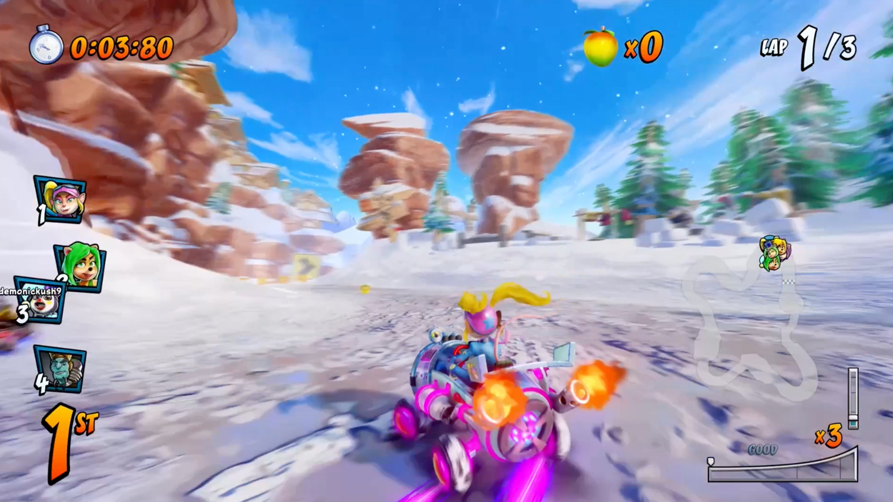
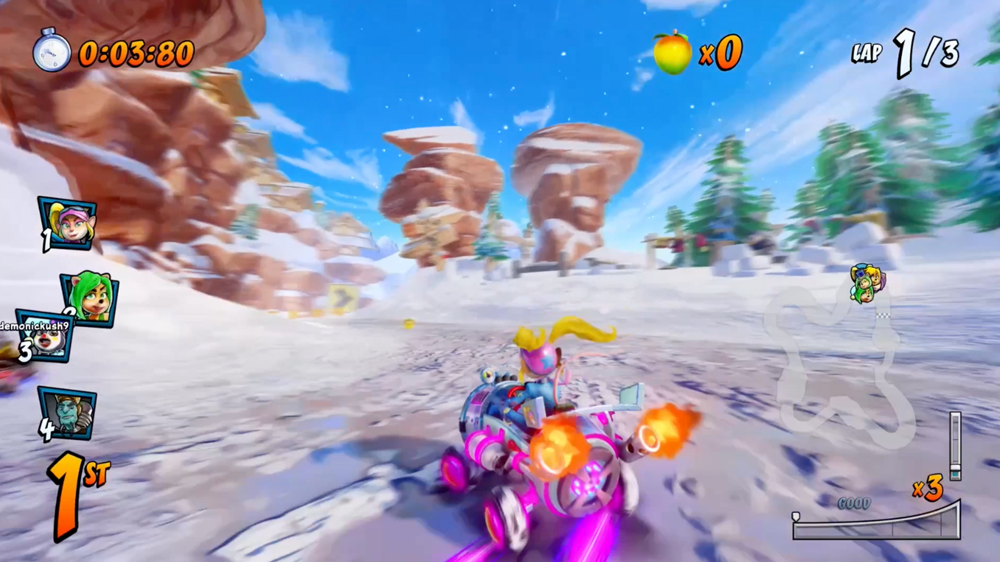

Crash Team Racing - Nitro Fueled
Información del juego
Crash Team Racing Nitro Fueled es un videojuego, perteneciente al género de videojuego de karts desarrollado por el estudio Beenox y publicado
por Activision. Es una remasterización del videojuego Crash Team Racing del año 1999, desarrollado originalmente por Naughty Dog para la
PlayStation. También incluye contenido de los videojuegos Crash Nitro Kart, desarrollado originalmente por Vicarious Visions en el año 2003,
y Crash Tag Team Racing, desarrollado originalmente por Radical Entertainment en 2005.
El videojuego se lanzó para las consolas PlayStation 4, Nintendo Switch y Xbox One el 21 de junio del año 2019.
¡Crash regresa al volante! Prepárate para desmelenarte con Crash™ Team Racing Nitro-Fueled. Es la experiencia auténtica de CTR
y mucho más; completamente remasterizada y hasta arriba de revoluciones.
56 personajes, 40 circuitos, 40 karts de CTR, CNK y mucho más. Además de 9 modos de juego locales, incluido el modo Aventura: ¡El infame modos
aventura de CTR!.
Crash Team Racing - Nitro Fueled cuenta con varios modos de juegos como los siguientes:
- Modo aventura: Trata la historia del torneo de Oxide, en la que distintos corredores tanto del bando de los villanos como de los héroes se reúnen para hacer frente al desafío extraterrestre de un tercer bando, el equipo Oxide liderado por Nitrous Oxide.
- Carrera Individual: Un modo de exhibición en el cual se disputan carreras en los distintos escenarios disponibles, con cualquiera de los corredores.
- Modo versus: Modo de carrera en el que diversos jugadores humanos compiten bajo condiciones de juego específicas de las carreras.
- Torneo: Habilitado para juego individual y multijugador, distintos jugadores compiten con la IA en un conjunto de mapas en un torneo por puntos para lograr un lugar en el podio de campeones.
- Parte del modo exhibición en el cual los jugadores recorren los mapas en modalidad estándar simplificada sin poderes, para establecer los mejores tiempos, los jugadores pueden guardar la reproducción de sus carreras como fantasmas para competencias contra uno mismo.
- Modo Batalla: Modo de juego en el que los jugadores compiten en mapas especiales diseñados específicamente para batallar con los superpoderes en una competición en la que los jugadores que acierten primero cierto número de golpes a los otros competidores ganan.
- Carrera de Anillos: Consiste en pasar por debajo de una cadena de anillos en el menor tiempo posible que a su vez van sumando tiempo y puntos al marcador dándonos velocidad extra, en cada vuelta disminuye el tamaño de los anillos haciendo más complicado pasar por debajo de ellos, el juego termina cuando el contador de tiempo llega a cero.
Reseñas
IGN
Bueno
"CTR Nitro-Fueled deja al resto de los juegos del género en el polvo al llegar con visuales impresionantes,
gameplay complejo y entretenido, montones de personalidad, y una cantidad impresionante de contenido."
"La dificultad de Crash Team Racing Nitro-Fueled, el diseño de pista memorable y la adictiva mecánica de deslizamiento
de potencia lo convierten en un juego de carreras de karts que vale la pena jugar,
pero no está exento de frustraciones."
"8.2 / 10"
Metacritic
Generalmente favorable
"Basado en 76 reviews de críticas."
"Crash Bandicoot y compañía regresan a la pista conduciendo sus karts,
ahora completamente remodelados y listos para competir en la actual generación de consolas. Un título un poco exigente
pero muy bonito, totalmente recomendado para jugar con amigos y revivir esos maravillosos
momentos de nuestra infancia."
"83 / 100"
LevelUp
Una gran experiencia de karts para novatos y nostálgicos
"Recomiendo Crash Team Racing Nitro-Fueled a todos los que son fans de la entrega
original y la extrañan. El remake está hecho para sentirse justo como recuerdas la experiencia original,
pero pulida, con más contenido y gráficos completamente renovados. Como mencioné antes, también creo que
puede dejar muy contentos a todos aquellos que quieren un nuevo juego de karts que sólo se preocupe por
diversión sencilla sin preocuparse por desafiar la gravedad o vehículos que se transforman."
"8.8 / 10"
Imágenes y capturas del juego
 
